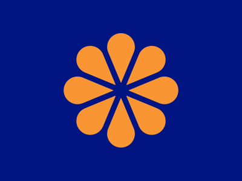
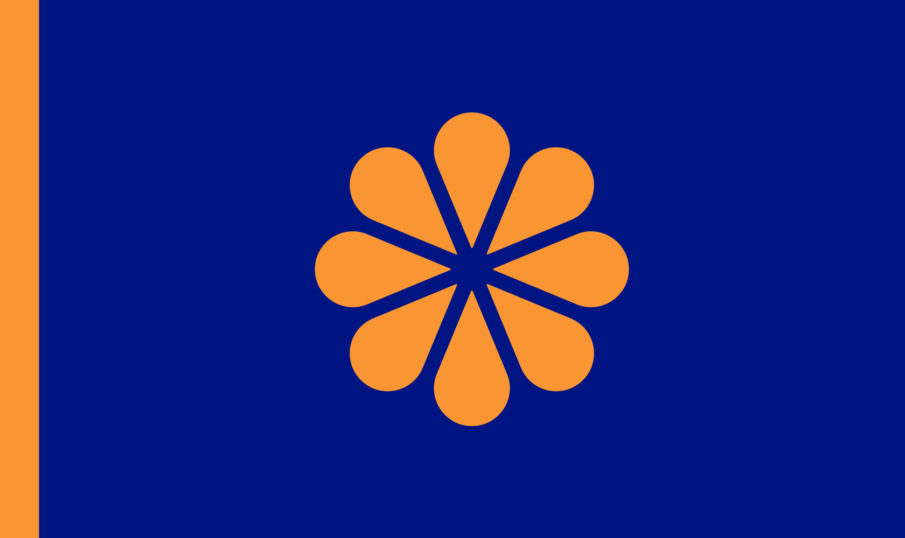

NEW Story: Killers
Commonwealth of Vekllei
Table of Contents
| Vekllei Commonwealth | |
|---|---|
| Sovereign Commonwealth of Atlantic Communities | |
|  | |
| Capital | Comet |
| Population | 24,371,300 |
| Area | 2,386,688 km2 |
Vekllei is best conceptualised as a union of islands across the Atlantic Ocean. It is a commonwealth,1 the fourth in a series, and consists of many island republics that are connected by politics and prosperity, not geography or race. These islands range in size from the Selvas Islands of 160 people to the island of Oslola, of 8 million. Together, they amount to a single superstate that spans the entirety of the Atlantic as a great power.
The Commonwealth which unites them is highly centralised and built on common systems of governance and economic management. Member republics, organised in constituent commonwealths cede aspects of governance like security, health and education to the federal Commonwealth. The country is colloquially known as Vekllei, an Algic corcidi word meaning people of the sea and stars.2 It is also known as the Commonwealth of Oceans.
The capital of Vekllei is Comet, located west of the Azores Commonwealth in the Meteor Islands.
Vekllei is often regarded a nation by will, rather than of culture or geography. It consists of distant autonomous republics with many cultures and languages, and it has attracted millions of immigrants since independence looking to participate in building the unique aspects of its governance and society.
Oslola, raging and now blinded, drew deep wounds into the Earth. Out of these wounds came fire, and out of fire came her child Oslola.
– Retelling of Algic legends, Verse 40, Saga of Origins
What is Vekllei?
Vekllei is a country that consists of many island republics in the Atlantic. The largest of these is called the Oslola, which is its most populous island. Vekllei is the setting of this fiction, and is the home of most of its characters.Where is Vekllei?
Most of Vekllei's islands are found in the North Atlantic and Caribbean seas. Its northernmost territory is Helvasia (Svalbard) and its southernmost territories are on the Antarctic continent. It also has a claim on the moon.When was Vekllei founded?
The Commonwealth of Oceans (Vekllei) was founded in 2017 after independence in 2015, and is the 4th in a succession of historic Commonwealths based in the Kalan and Oslolan Islands. The first, known as the Nord Commonwealth, was the world's first parliament and among the first democracies in the world.History #
The diversity of the Commonwealth is reflected in its history. Vekllei as we know it today may have roots in in the Oslola-Kalan Union and Kalina nationalism, but its story begins in 1995, during the First Atomic War and British occupation of its former colonial territories for 20 years. That occupation, and the complete restructuring of Atlantic society beneath it, lay the foundations for a new and pluralistic union of republics called Vekllei.
❀ Read more: ⏳ Timeline
Many Commonwealth republics have been inhabited for thousands of years, and have strong cultures and traditions that encompass many unique languages and faiths. The Kalina Isles and Oslola have archaeological evidence indicating settlement since at least 3000BC, and much of Oslolan and Kalan history has been recorded through poetry and Sagas.
The Commonwealth of Oceans has precedence in the Oslolan Commonwealths that existed sporadically between 700 AD and 1600 AD. For this reason, the Vekllei Commonwealth is sometimes referred to as the “4th Commonwealth,” a phrase that draws a direct connection between Vekllei and the Oslolan Commonwealths.3
Common history of the republics begins in 1710 AD, when Oslola and Kala capitulated to the Kingdom of Great Britain and became subjects the British Empire. In 1836, the British colonies in the Atlantic were reincorporated as the British Atlantic Territories. This colony was granted autonomy in 1838 and achieved dominion status in 1926, and lay the groundwork for Oslolan independence in 1935.
After the Second World War, the Oslolan Republic struggled through a series of crises that culminated in the fall of government and the establishment of the Atlantic Council in 1963, which severed ties with the UK. Rising territorial ambitions and erratic council rule saw relations strained and culminated in the Oslolan Civil War in 1992 and the exchange of nuclear weapons with the UK in 1995.
Oslolan territories, including Kala and Demon, were occupied between 1995 and 2017. Independence was granted in 2015, in which occupied territories ceded local rule to a union called the Vekllei Commonwealth. This Commonwealth is the foundation of modern Vekllei.
Other member-states,4 including Kalina and former Atlantic Portuguese territories, joined beteen 2020 and 2040.
State #
Vekllei contains a lot of ideas colliding with each other, which break into fragments and fuse to create new elements. This is a result of its similarly chaotic history, uniting a patchwork of republics that have been subjugated by other powers over time. These elements have evolved to become a new kind of nation-state, unique in the world and history.
The Commonwealth is foremostly a union of Atlantic and Caribbean islands which, freed from colonial rule, have established a federal system to share common burdens and improve the lives of their oceangoing peoples.
Vekllei is a constitutional, federated country including eight individual commonwealths which share political features established by the Council of Roses.
It has a unique kind of federalism, with republics and territories orbiting central Commonwealth control at different distances. A common means of petitioning membership, or “acceding” to the Commonwealth is via its international organisation called the Community of Oceans.
Although regionally and culturally diverse, Commonwealth government is centralised and the state functions as a single country. These republics have large degrees of autonomy, but are unilaterally governed by the central Commonwealth government as an intact state.
“Vekllei” is the phrase for the culture and ideology of the Commonwealth state, and is used interchangeably to refer to the country.
Territories #
✿ Main article: Vekllei World Map
Constituent Commonwealths of Vekllei
- Commonwealth Antarctica
- Commonwealth Antilles
- Commonwealth Arctic
- Commonwealth Atlantic
- Kalina
- Commonwealth Lucaya
- Commonwealth Verde
- Commonwealth Volcanic
List of Vekllei Republics
-
Federal Territories
- Meteor Federal Territory
- Vekllei Antarctic Territories
- Vekllei Lunar Territories
- Vekllei Mars Community
-
Antilles Commonwealth
- Aruba Republic (Aruba)
- Bonaire Republic (Bonaire)
- Caimanas Republic (Caimanas)
- Curaçao Republic (Curacao)
-
Arctic Commonwealth
- Helvasia (Svalbard)
- Kala Republic (Greenland)
-
Atlantic Commonwealth
- Fayal Republic (Faial Island)
- Flores Republic (Flores Island)
- Graciosa Republic (Graciosa Island)
- Maria Republic (Santa Maria Island)
- Mira Republic (Madeira)
- Pico Republic (Pico Island)
- Porto Santo Republic (Porto Santo)
- Terceira Republic (Terceira Island)
- Velas Republic (Sao Jorge Island)
- Verde Republic (Sao Miguel Island)
-
Lucayan Commonwealth
- Caicos Republic (Turks & Caicos)
- Cigateo Republic (Eleuthera)
- Curateo Republic (Great Exuma)
- Grand Bahama Republic (Grand Bahama)
- Guanima Republic (Cat Island)
- Habacoa Republic (Andros Islands)
- Inagua Republic (Great Inagua)
- Lucayoneque Republic (Abaco Islands)
- Mayaguana Republic (Mayaguana)
- Nema Republic (New Providence)
- Rum (San Salvador & Rum Cay)
- Summers (Bermuda)
- Yabaque Republic (Acklins)
- Yuma Republic (Long Island)
-
- Allia (Montserrat)
- Aloi Republic (St Eustatius)
- Aloubaera (Tobago)
- Anguis Republic (Anguilla)
- Antam Republic (Antigua)
- Barbados Republic (Barbados)
- Barbuda Republic (Barbuda)
- Cama (Grenada)
- Karu Republic (Guadeloupe)
- Kabuli Republic (Dominica)
- Kairi (Trinidad)
- Liamuiga Republic (St Kitts)
- Lucia Republic (Saint Lucia)
- Madiana Republic (Martinique)
- Oualie Republic (Navis)
- Ouanalao Republic (Saint Barthelemy)
- Saba Republic (Saba)
- Soualiga Republic (Saint Martin/Sint Maartin)
- Virgin (British/Spanish/U.S. Virgin Islands)
- Youloumain Republic (Saint Vincent & The Grenadines)
-
Verde Commonwealth
- Boa Vista Republic (Boa Vista)
- Brava Republic (Brava)
- Covoada Republic (Sao Nicolau)
- Fogo Republic (Fogo)
- Maio Republic (Maio)
- Moroços Republic (Santo Antao)
- Praia Republic (Santiago)
- Principe Republic (Sao Tome & Principe)
- Sal Republic (Sal)
- Viana Republic (Sao Vicente)
-
Volcanic Commonwealth
The Commonwealth spans the length and width of the Atlantic and Caribbean oceans. Its northernmost island in the Commonwealth is Helvasia (Svalbard) in the Arctic Ocean, and its southernmost island is Southern Thule, in the Sude island chain (South Sandwich). The Commonwealth also has Antarctic and Lunar territories. They are united by a strong central government, and administered in a cascading federal system.
These islands are diverse in both size and geography, and range from barren subarctic rocks to flourishing Caribbean archipelagoes.
A major motivator of membership in the Commonwealth is its trade influence and wealth, since constituents and territories are entitled to the same standards of living as its major industrial territories. The most recent member is Cabo Verde, acceding in 2038 after two decades of membership in the Council of Oceans.
The Commonwealth has explored petitions for membership from non-island countries including Suriname, though these have been unsuccessful.
Government #
✿ Main article: Government
The Vekllei government plays an active role in the lives of ordinary people. Each commonwealth republic is represented by two people5 of equal standing called Prime Ministers. These ministers represent the bicameral parliaments and assembled cabinets of their homes,6 and participate equally in a council of leaders called the Directory.
There are different levels of elected government in Vekllei.
- The Vekllei Commonwealth is the federal governing body and parliament of the constituent republics. The head of state is the Council. The Commonwealth Senate has special powers to approve or reject legislation.
- The National Commonwealths are constituent republics that manage home affairs with devolved powers. They each have National Assemblies which propose legislation.
- The Polis o Democros (Republics) are city republics, areas or boroughs that manage local services. Territories in Vekllei are also governed by Municipal Commonwealths.
Vekllei elections do not allow political parties, a system called nonpartisan democracy. Commonwealth ministries and council secretariats are lead by professional directors appointed by an internal vote, and final approval resting with the Directory.
Economy #
The Vekllei economy exists in two pieces: as a social market, dominated by wandering interest and cooperation, and as a financial market, which subsidises the former. The moneylessness of the social market is the marvel of the Vekllei nation and is deeply revered by citizens and disaffected foreign ideologues alike.
❀ See also: A Social Economy
The Commonwealth has a hybrid moneyless system called commons, in which money is not used in daily life. In the place of money, the commons system exists as a series of social economies and usufructs. Rather than purchasing products as consumers, staples like food and clothing are subsidised by groups of companies known as bureaus. Everything else is produced in the colloquial moneyless market, often unreliably.
Money is used in a seperate industrial and financial market called the financialised commons. In this market, Vekllei has two currencies known as Vekllei and Government Crowns, which are used by the government, industry and foreigners to interact with the Vekllei economy and purchase securities and financial instruments. Money is also used as a means of exchange between Commonwealth republics as a privilege of the state.
The country has maintained high unemployment since independence, sliding between 5-10% for most of the postwar period.
The commons economy relies on a system of participatory work, encouraged by the simple and universal rule to be employed, called Consosva. The standard of living in Vekllei is quite good and is unique among modern societies today.
In industrialised regions like Oslola, the commons has a sophisticated network of incentives and social engineering to facilitate its quality of life. In other regions, particularly scattered across the many archipelagos and small islands of the Commonwealth, self-sufficiency is more common and dependent on fishing, community and codependence.
Work #
Employment in Vekllei has many unique features, not least of which is its functional moneylessness. Except for Verde,7 no republic of the Commonwealth uses money in daily life. Work in Vekllei is characterised by lifetime employment and seniority-based advancement, though this culture is changing in some industries. Most larger businesses in Vekllei function as cooperatives, often as part of a Bureau.
*")
This work environment ranks highly for productivity but lowly for economic freedom, as the structure of the commons inhibits scaling businesses beyond social dimensions. Private business ownership is most common in small communities with strong social bonds, particularly in rural or agricultural areas.
Vekllei people generally have aspirations of power rather than wealth, and work towards that goal in the absence of a wage. Other reasons for work include its strong social dimensions and relaxed ethic, which are facilitated by a professional but gentle work culture that retains short working days and frequent tea breaks.
Finance #
✿ Main article: 💵 Finance in Vekllei
Vekllei separates its markets to allow for money to be used by industry and the government as part of trade and business.
- The Commons is the moneyless and participatory domestic market.
- The Financialised Commons are the moneyed industrial and international markets.
Most Vekllei people never interact with the financialised commons, but it plays a significant role in the economy. Vekllei’s history as a series of entrepôts and its international neutrality have made it desirable as a place of business and investment, and many foreign companies bank in Vekllei. Vekllei is a major commodities and securities exchange, via the Vekllei International Market.
Despite its international investment and low barriers to trade, the Commonwealth government is a major participant in the financialised commons and contributes significantly to its currency pool. Vekllei has the second-largest foreign currency reserves in the world.
The Commonwealth has major financial hubs in Bermuda, the Bahamas and the Azores.
Industry #
✿ Main article: ⚙️ Industry
❀ Read more: 🏬 State Industry in Vekllei
Vekllei has a large industrial capacity and produces vehicles, machine tools, steel and nonferrous metals, ships, chemicals, textiles, and processed foods. It has the 12th-highest manufacturing output in the world.
Parts of Vekllei are highly industrialised,8 and the country has modernised its economy since independence through labour-saving automations, centralisation and new technologies like robotics. Very few Vekllei people work in traditional factory labour, since it is impractical in the commons, and so most production and assembly occurs in automated factories known as lots.
Major industries in Vekllei leverage the creative productivity of its enthusiastic and well-educated population, and leads markets in financial services, design, banking, electronics, telecommunications and research. Its historic reputation as a reliable and efficient entrepôt and geographic diversity means Vekllei is a major hub of trade and is well-connected to the rest of the world.
Property #
❀ Read more: 🏡 Property in Vekllei
The right to property is protected by the Vekllei Constitution, and important in North Vekllei culture. Home ownership is a foundation of Atlantic Municipalism, and is determined by stewardship of land.
In the Vekllei legal system, land has three competing agents:
- The Steward – the occupier and worker of the land
- The Public – the community, municipality and state
- The Sovereign – the land itself, as a seperate sovereign kingdom of nature
Rather than defined legal owners, land ownership in Vekllei is a pluralistic competition between these three agents. The claim to ownership grows with time and use, and so it is possible for any agent to litigate property provided a reasonable claim to ownership can be provided.
In North Vekllei, where Upen folk metaphysics are practiced, the Sovereign is treated literally as a competing agent. In other parts of Vekllei, like the Kalina Isles, it is treated as nature itself or the environment. In both cases, the interests of the Sovereign are established by special prosecutors in court.
Nearly 96% of Vekllei people own their homes, among the highest rates of home-ownership in the world.
Foreign Policy #
Vekllei has championed the nonalignment movement since independence. Situated between NATO powers (North America and Western Europe) and between exploited developing regions (South America and West Africa), the Commonwealth uses nonalignment simultaneously as an instrument of peace and intervention. It has close relations with other nonaligned countries, including Yugoslavia and India.
This historical neutrality and geographic accessibility has encouraged the founding and relocation of international organisations to Vekllei. Vekllei chairs the Council of Oceans and has many international organisations headquartered across its republics, including the International Federation of Journalists and the new United Nations Office.
Many Vekllei people work overseas for a period of time, either individually or as part of Commonwealth-sponsored programmes. The country is among the largest exporters of doctors and teachers in the world, many of whom work in West and Southern Africa.
The Commonwealth has several disputed territories among its Constituents and territories, particularly the Falkland Islands with Argentina and the Antilles Commonwealth with Venezuela.
Military #
The Commonwealth has a large military and takes an active role in a variety of conflicts around the world. It is separated into a large conscripted militia, for which all citizens receive training, and a professional armed forces. Its professional armed forces have an expeditionary character and consist of small, highly mobile units deployable to developing regions overseas.
Vekllei has a large domestic arms industry and produces most of its equipment internally, with significant spending on research. It also exports large numbers of arms to foreign nations, particularly members of the nonaligned movement.
Recent conflicts include the 2045 intervention in Haiti and the 2065 Congo Crisis.
Vekllei is a nuclear power and maintains a network of ICBM silos and air-deployable nuclear weapons as part of deterrence.
Society #
Commonwealth society is multicultural, egalitarian, informal and pluralistic. Aspects of society can be closely controlled by government or anarchistic, depending on circumstance. Vekllei has a strong sense of civic identity based around Atlantic Municipalism and Floral Democracy.
Although acknowledging its indigenous cultures, postwar society in Vekllei emphasises a broad esprit de corps that informs belief through common values and political practices.
*")
Commonwealth society is internationalist owing to its internal distance and diversity, and so aspects of its political and cultural beliefs are considered universal. Atlantic Laicity overrules religious practice where it violates Commonwealth values or law – for example the wearing of long veils in schools and public institutions is prohibited. Similarly, the Commonwealth considers democracy to be a foundational human right and belief in it is essential for participation in society.
Because the unmoneyed Commons economy is essentially unregulated beyond the Vekllei Basic Laws, Commonwealth society has strong anarchist currents.
Education #
✿ Main article: 📚 Education in Vekllei
Education in Vekllei is universal and compulsory for children until the age of 16. All schools are coeducational, with the exception of a handful of faith schools.
Education across the Commonwealth is considered a life-long affair, and the country has many public programmes to encourage adult learning. The quality and universality of Vekllei education has ensured universal literacy across the Commonwealth and is a major export, both as a business and as a form of diplomacy and aid.
Demographics #
❀ Read more: 👨👩👧👦 Demographics of Vekllei
24 million people live in Vekllei, and about half of them were born overseas. This number has settled in the mid-21st century, and is growing only slightly.
Due to the unique geographic make-up of the country, Vekllei is highly centralised across a handful of major cities on its most populous islands and archipelagos. This population is also highly urbanised due to contemporary housing policy.
The Commonwealth is often described as a “cultural mosaic” because of its diverse linguistic and cultural groups. Immigration was encouraged as part of the Century Society laws, and resulted in the population of the Commonwealth increasing by nearly 8 million people between 2015 and 2050. Combined with the membership of new Constituents during this time, the population of the Commonwealth has doubled since independence.
As a pluralistic society, a national civic identity called Civic Commons is promoted by the government as a means to foster social cohesion. As a nation by will rather than by circumstance, Vekllei has a strong national identity and the Vekllei diaspora9 feel strongly towards the country.
Ancestry & Immigration #
❀ Read more: ⚖️ Century Society Laws
Millions of migrants have settled in Vekllei. They arrived primarily from the territories of the former British and Portuguese empires, but large indigenous populations exist in Oslola, Kalina, the Antilles and Principe.
Major Ancestries of Vekllei
- Oslolan (33%)
- UK & Ireland (29.9%)
- Kalinago/Carib (9.5%)
- Black (8.6%)
- Commonwealth Asian (5.5%)
- Hispanic (4.4%)
- East Creole (4%)
- Portuguese (3.1%)
- Latin American (2.9%)
- Indian/Ceylonese (1.7%)
- French (1.6%)
- Southern European (1.5%)
- Slavic (1.3%)
- Others (1%)
Language #
Vekllei has 16 official unique languages, a result of its unique communities and decentralised geography. It has an official constructed language, called Veletian, and English is widely spoken and understood. English, Veletian and a local language are generally taught in schools, and it is not uncommon for Vekllei people to speak three or four languages.
Religion #
Vekllei is agonistic and has no official religion, but recognises and has protections for traditional and folk religions. Recognised traditional faiths include folk Oslolan spiritualism, Kalina local faiths and the Catholic, Apostolic and Roman religions.
Religion plays a role in certain Commonwealth societies, affecting local holidays and days of rest. In societies with large folk religions like Oslola and Kalina, aspects of local faith are present in the structure of municipal government and public companies.
Although the official position of the Commonwealth is as a lay, secular republic that forbids public worship in state institutions like schools and government, it is loosely enforced.
Transport #
❀ Read more: 🚇 Vekllei National Rail
The Commonwealth has a comprehensive common transit network, which makes up most commuter traffic in the country. Automobiles are uncommon, except in the lending of “company cars” or via community Autopools. Most of the Vekllei republics are serviced by a dense network of trains and trams, and connected to each other via ferries, passenger jets and helijets.
*")
Public transit ranges from state-of-the-art maglev lines in Oslola to century-old steam locomotives in Verde, operated by Vekllei National Rail. The sophistication of the network allows almost any citizen of the Commonwealth to travel from their doorstep to the moon entirely via public transport.
Communications #
❀ Read more: 📯 Post in Vekllei
❀ Read more: 🖥 Computing in Vekllei
The Commonwealth is the site of the Atlantic Telephone & Telegraph Exchange, which services connections between the Americas and Europe. It has a sophisticated network of public phones available to persons with a Phone Card. Radio and television broadcasting are operated by the Ministry of the Commons via the Commonwealth Radio and Commonwealth Television companies, which contract regional service to local operators.
The Commonwealth maintains the National Bulletin System, a form of networked electronic bulletin board that is able to be accessed from most libraries and schools across its republics.
-
Commonwealths are a historical nation-state indigenous to some Constituents, and today distinguishes Vekllei from federalised or unitary states and emphasises their egalitarian values and shared future. ↩︎
-
The corcidi is actually a combination of two poetic phrases, and is usually transliterated separately as people of the sea, people of the stars, though the meaning is the same. ↩︎
-
The Vekllei Commonwealth celebrates pan-atlanticism and strongly rejects historic connections to any one nation-state. For this reason, the phrase “4th Commonwealth” is controversial and sometimes associated with Oslolan Scandinavian nationalists. ↩︎
-
“Member-states” refers to territorial membership in the Commonwealth, either as full Constituents or Territories. ↩︎
-
In all Commonwealths except for Kala, the prime ministers are required to be one man and one woman. ↩︎
-
The Prime Ministers represent a single office, called a Sorda. ↩︎
-
Verde acceded to Commonwealth membership in 2038, and is undergoing full integration with the commons moneyless system. ↩︎
-
Oslola and the Kalina Commonwealth are the primary industrial regions of Vekllei, and also supply most of its food through its vast fisheries and food factories. ↩︎
-
Vekllei has a large diaspora of emigrants from the Civil and Atomic Wars. They are concentrated mostly in the United States and the United Kingdom. ↩︎